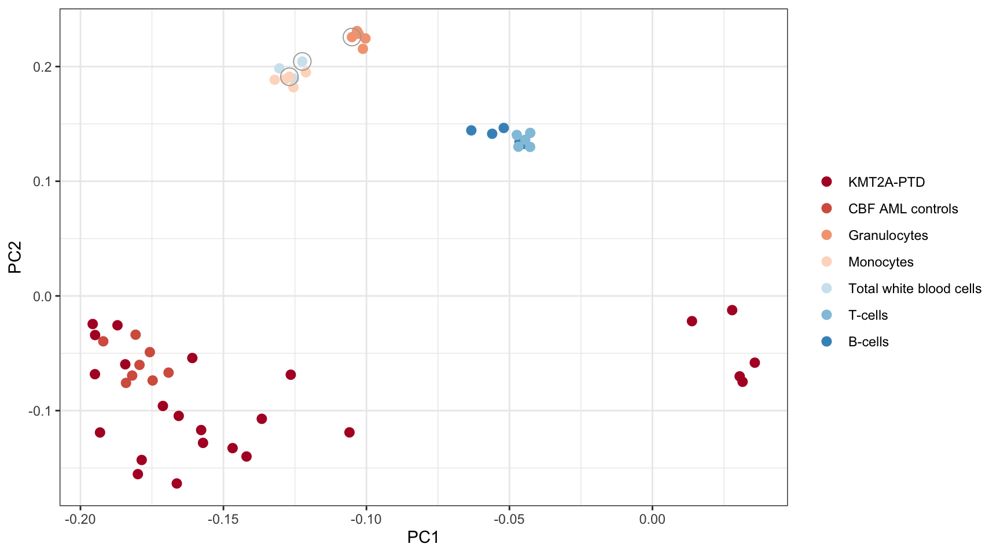

Last updated: 2021-05-28
Checks: 7 0
Knit directory: MINTIE-paper-analysis/
This reproducible R Markdown analysis was created with workflowr (version 1.6.2). The Checks tab describes the reproducibility checks that were applied when the results were created. The Past versions tab lists the development history.
Great! Since the R Markdown file has been committed to the Git repository, you know the exact version of the code that produced these results.
Great job! The global environment was empty. Objects defined in the global environment can affect the analysis in your R Markdown file in unknown ways. For reproduciblity it’s best to always run the code in an empty environment.
The command set.seed(20200415) was run prior to running the code in the R Markdown file. Setting a seed ensures that any results that rely on randomness, e.g. subsampling or permutations, are reproducible.
Great job! Recording the operating system, R version, and package versions is critical for reproducibility.
Nice! There were no cached chunks for this analysis, so you can be confident that you successfully produced the results during this run.
Great job! Using relative paths to the files within your workflowr project makes it easier to run your code on other machines.
Great! You are using Git for version control. Tracking code development and connecting the code version to the results is critical for reproducibility.
The results in this page were generated with repository version ed3d2b6. See the Past versions tab to see a history of the changes made to the R Markdown and HTML files.
Note that you need to be careful to ensure that all relevant files for the analysis have been committed to Git prior to generating the results (you can use wflow_publish or wflow_git_commit). workflowr only checks the R Markdown file, but you know if there are other scripts or data files that it depends on. Below is the status of the Git repository when the results were generated:
Ignored files:
Ignored: .DS_Store
Ignored: .Rhistory
Ignored: .Rproj.user/
Ignored: analysis/cache/
Ignored: data/.DS_Store
Ignored: data/RCH_B-ALL/
Ignored: data/leucegene/.DS_Store
Ignored: data/leucegene/KMT2A-PTD_results/.DS_Store
Ignored: data/leucegene/normals_ncontrols_test_results/.DS_Store
Ignored: data/leucegene/normals_ncontrols_test_results/ncon0/.DS_Store
Ignored: data/leucegene/normals_ncontrols_test_results/ncon1/.DS_Store
Ignored: data/leucegene/salmon_out/
Ignored: data/leucegene/sample_info/KMT2A-PTD_8-2.fa.xls
Ignored: data/leucegene/validation_results/.DS_Store
Ignored: data/simu/.DS_Store
Ignored: data/simu/results/.DS_Store
Ignored: data/simu/results/MINTIE/.DS_Store
Ignored: data/simu/results/MINTIE/varying_dispersion/.DS_Store
Ignored: output/Leucegene_gene_counts.tsv
Ignored: packrat/lib-R/
Ignored: packrat/lib-ext/
Ignored: packrat/lib/
Untracked files:
Untracked: data/leucegene/validation_results/TAP/
Unstaged changes:
Modified: .Rprofile
Note that any generated files, e.g. HTML, png, CSS, etc., are not included in this status report because it is ok for generated content to have uncommitted changes.
These are the previous versions of the repository in which changes were made to the R Markdown (analysis/Leucegene_Gene_Expression.Rmd) and HTML (docs/Leucegene_Gene_Expression.html) files. If you’ve configured a remote Git repository (see ?wflow_git_remote), click on the hyperlinks in the table below to view the files as they were in that past version.
| File | Version | Author | Date | Message |
|---|---|---|---|---|
| Rmd | ed3d2b6 | Marek Cmero | 2021-05-28 | Figures tweaks and reordering. |
| html | 4206f12 | Marek Cmero | 2021-04-30 | Build site. |
| html | 41431cc | Marek Cmero | 2020-07-07 | Build site. |
| Rmd | f16b530 | Marek Cmero | 2020-07-07 | Added 5 missing leucegene AML controls to gene expression analysis |
| html | 4b8113e | Marek Cmero | 2020-07-03 | Build site. |
| html | e9e4917 | Marek Cmero | 2020-06-24 | Build site. |
| html | b5825d3 | Marek Cmero | 2020-06-11 | Build site. |
| Rmd | c2c1c58 | Marek Cmero | 2020-06-11 | Fixed several tables to reflect paper more closely |
| html | 0b21347 | Marek Cmero | 2020-06-11 | Build site. |
| Rmd | fa6bf0c | Marek Cmero | 2020-06-11 | Updated with new results; improved tables |
| html | 3702862 | Marek Cmero | 2020-05-18 | Removed MLM samples from final B-ALL results |
| html | a166ab8 | Marek Cmero | 2020-05-08 | Build site. |
| html | a600688 | Marek Cmero | 2020-05-07 | Build site. |
| html | 5c045b5 | Marek Cmero | 2020-05-07 | Build site. |
| html | 90c7fd9 | Marek Cmero | 2020-05-06 | Build site. |
| Rmd | ff4b1dc | Marek Cmero | 2020-05-06 | Leucegene results |
| html | 358aa53 | Marek Cmero | 2020-05-04 | Build site. |
| Rmd | 453d754 | Marek Cmero | 2020-05-04 | Added controls comparison in normals analysis. Added variant class collation function. Added variant summary for |
| html | 4a5d6ae | Marek Cmero | 2020-05-01 | Build site. |
| Rmd | 9556ebb | Marek Cmero | 2020-05-01 | Added leucegene normals analysis. Added expressed genes analysis to leucegene gene expression analysis. |
| html | 784838b | Marek Cmero | 2020-04-30 | Build site. |
| Rmd | c4c3844 | Marek Cmero | 2020-04-30 | Added leucegene gene expression notebook |
# util
library(data.table)
library(dplyr)
library(here)
library(stringr)
# plotting/tables
library(ggplot2)
library(RColorBrewer)
library(gt)
# bioinformatics/stats helpers
library(tximport)
library(limma)
library(edgeR)
library(matrixStats)options(stringsAsFactors = FALSE)source(here("code/leucegene_helper.R"))Here we generate a PCA plot for all the Leucegene samples used in the MINTIE paper KMT2A-PTD and normal sample analyses, and perform a few small expression analyses presented in the paper. Salmon output is not provided in the repository and must be generated by the user.
salmon_dir <- here("data/leucegene/salmon_out")
# construct list of quant.sf files
quant_files <- list.files(salmon_dir,
full.names = TRUE,
recursive = TRUE,
pattern = "quant.sf")
# transcript > gene reference file for CHESS
tx2gene <- read.delim(gzfile(here("data/ref/tx2gene.txt.gz")))
# import quant files
txi <- tximport(quant_files,
type = "salmon",
countsFromAbundance = "lengthScaledTPM",
tx2gene = tx2gene,
ignoreTxVersion = FALSE)
# load sample info
celltype <- read.delim(here("data/leucegene/sample_info/celltypes_info.tsv"))
kmt2a_samples <- read.delim(here("data/leucegene/sample_info/KMT2A-PTD_samples.txt"), header = FALSE)$V1
aml_controls <- read.delim(here("data/leucegene/sample_info/selected_13_CBF_AML_controls.txt"), header = FALSE)$V1
nup_samples <- read.delim(here("data/leucegene/sample_info/NUP98-NSD1_samples.txt"), header = FALSE)$V1
# reduced normal control set (used in KMT2A-PTD analysis)
s1 <- celltype$SRX_ID[celltype$cell_type == "Total white blood cells"][1]
s2 <- celltype$SRX_ID[celltype$cell_type == "Monocytes"][1]
s3 <- celltype$SRX_ID[celltype$cell_type == "Granulocytes"][1]
reduced_normal_controls <- c(s1, s2, s3)MINTIE paper Supplememtary Figure 5. PCA of gene expression derived from Salmon quantification for Leucegene KMT2A-PTD and normals. Normal samples used as controls in the reduced set of controls are circled.
# get counts matrix
counts <- txi$counts
colnames(counts) <- list.files(salmon_dir)
write.table(counts, file = here("output/Leucegene_gene_counts.tsv"), sep = "\t", quote = FALSE, row.names = FALSE)
# variance stabilised, log2 CPM transformation
ve <- voom(counts)$E
# select 500 most variable genes
select <- order(rowVars(ve), decreasing = T)[1:500]
# perform PCA amd select first two components
pr <- prcomp(ve[select,])
pc <- data.frame(pr$rotation[,1:2])
pc$sample <- rownames(pc)
# attach labels
pc <- left_join(pc, celltype, by = c("sample" = "SRX_ID"))
pc$cell_type[pc$sample %in% kmt2a_samples] <- "KMT2A-PTD"
pc$cell_type[pc$sample %in% nup_samples] <- "NUP98-NSD1"
pc$cell_type[pc$sample %in% aml_controls] <- "CBF AML controls"
pc <- pc[!is.na(pc$cell_type),]
# make colour mappings
cols <- brewer.pal(8, "RdBu")
names(cols) <- c("KMT2A-PTD",
"CBF AML controls",
"Granulocytes",
"Monocytes",
"Total white blood cells",
"T-cells",
"B-cells")
pc$cell_type <- factor(pc$cell_type, levels = names(cols))
# plot
ggplot(pc, aes(PC1, PC2, colour = cell_type)) +
geom_point(size = 2.5) +
theme_bw() +
scale_color_manual(values = cols) +
theme(legend.title = element_blank()) +
geom_point(data = pc[pc$sample %in% reduced_normal_controls,],
shape = 1, size = 5, fill = NA, colour = 'darkgrey')
Number of expressed genes found in Leucegene normals and percentage of those genes that are protein coding.
# load CHESS gene reference containing gene types
chess_genes <- get_chess_genes(gzfile(here("data/ref/chess2.2.genes.gz")))
# construct a normal counts matrix of "expressed" counts
# (>1 CPM in at least one sample)
normal_counts <- counts[,colnames(counts) %in% celltype$SRX_ID]
keep <- rowSums(cpm(normal_counts) > 1) >= 1
normal_counts <- normal_counts[keep,]
# tally gene types
expressed_genes <- rownames(normal_counts)
gene_types <- filter(chess_genes, gene %in% expressed_genes) %>%
group_by(Gene_Type) %>%
summarise(gene_count = length(unique(GFF_ID)))
gene_types <- rbind(gene_types, c("Total", sum(gene_types$gene_count)))
# results table
data.frame(gene_types) %>%
gt() %>%
tab_header(
title = md("**Gene classifications**")
) %>%
tab_options(
table.font.size = 12
) %>%
cols_label(
Gene_Type = md("**Gene type**"),
gene_count = md("**Count**")
)| Gene classifications | |
|---|---|
| Gene type | Count |
| antisense_RNA | 146 |
| lncRNA | 4116 |
| misc_RNA | 601 |
| protein_coding | 15030 |
| Total | 19893 |
n_protein_coding <- filter(gene_types, Gene_Type == "protein_coding") %>% select(gene_count)
print(paste("Proportion of expressed genes that are protein coding:",
(as.numeric(n_protein_coding) / length(expressed_genes)) %>% round(4)))[1] "Proportion of expressed genes that are protein coding: 0.7439"
sessionInfo()R version 4.0.3 (2020-10-10)
Platform: x86_64-apple-darwin17.0 (64-bit)
Running under: macOS Catalina 10.15.7
Matrix products: default
BLAS: /Library/Frameworks/R.framework/Versions/4.0/Resources/lib/libRblas.dylib
LAPACK: /Library/Frameworks/R.framework/Versions/4.0/Resources/lib/libRlapack.dylib
locale:
[1] en_AU.UTF-8/en_AU.UTF-8/en_AU.UTF-8/C/en_AU.UTF-8/en_AU.UTF-8
attached base packages:
[1] stats graphics grDevices utils datasets methods base
other attached packages:
[1] matrixStats_0.58.0 edgeR_3.32.1 limma_3.46.0 tximport_1.18.0
[5] gt_0.2.2 RColorBrewer_1.1-2 ggplot2_3.3.3 stringr_1.4.0
[9] here_1.0.1 dplyr_1.0.4 data.table_1.13.6 workflowr_1.6.2
loaded via a namespace (and not attached):
[1] tidyselect_1.1.0 locfit_1.5-9.4 xfun_0.21 purrr_0.3.4
[5] lattice_0.20-41 colorspace_2.0-0 vctrs_0.3.6 generics_0.1.0
[9] htmltools_0.5.1.1 yaml_2.2.1 rlang_0.4.10 later_1.1.0.1
[13] pillar_1.4.7 glue_1.4.2 withr_2.4.1 DBI_1.1.1
[17] lifecycle_1.0.0 commonmark_1.7 munsell_0.5.0 gtable_0.3.0
[21] evaluate_0.14 labeling_0.4.2 knitr_1.31 httpuv_1.5.5
[25] highr_0.8 Rcpp_1.0.6 readr_1.4.0 backports_1.2.1
[29] promises_1.2.0.1 scales_1.1.1 checkmate_2.0.0 jsonlite_1.7.2
[33] farver_2.0.3 fs_1.5.0 hms_1.0.0 digest_0.6.27
[37] stringi_1.5.3 grid_4.0.3 rprojroot_2.0.2 tools_4.0.3
[41] sass_0.3.1 magrittr_2.0.1 tibble_3.0.6 crayon_1.4.1
[45] whisker_0.4 pkgconfig_2.0.3 ellipsis_0.3.1 assertthat_0.2.1
[49] rmarkdown_2.6 R6_2.5.0 git2r_0.28.0 compiler_4.0.3